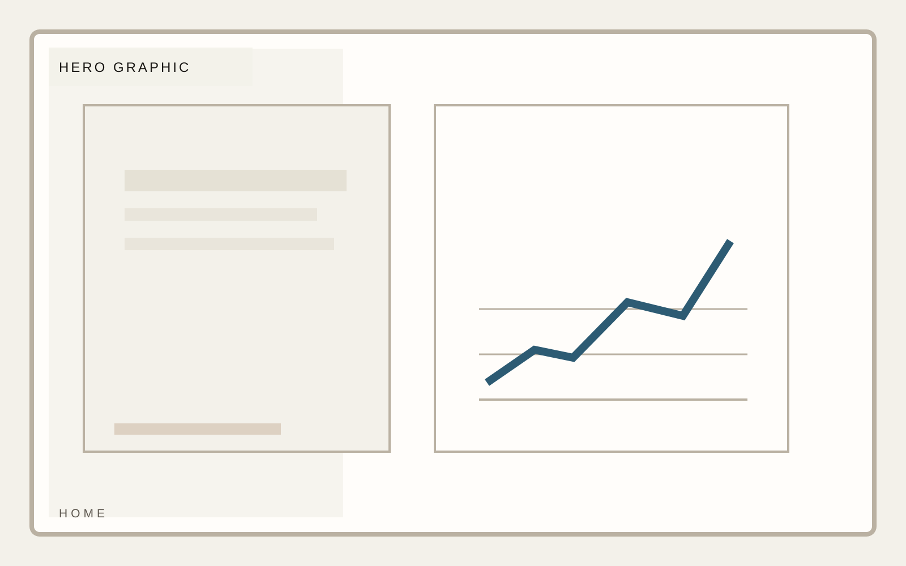
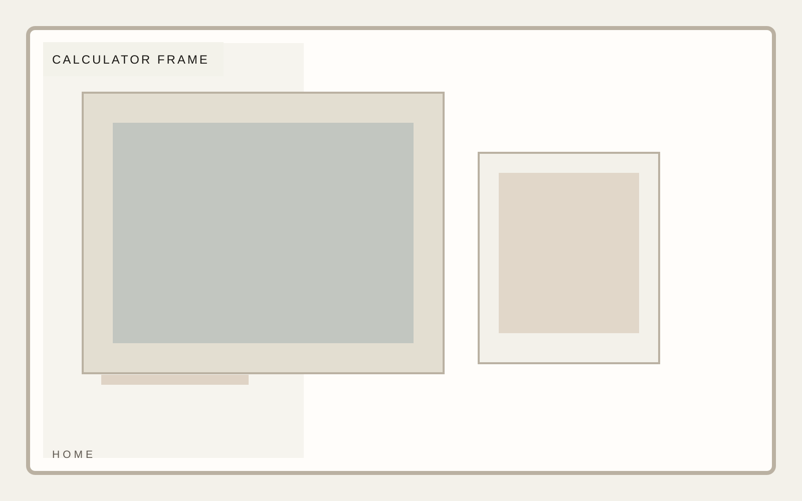
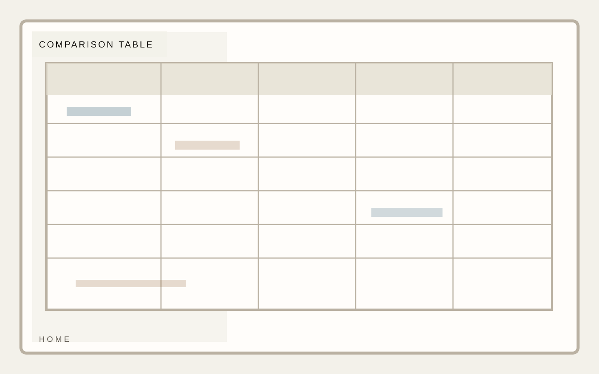

Method
Transparent assumptions
Interactive explainer
A calculator template for pricing, scenario comparison, and recommendation framing that treats information design as a first-class design problem. The recommendation engine is only convincing if the structure is immediately legible.

Interactive explainer
The calculator frame should look designed and usable at first glance. Inputs, labels, and grouping need to be unmistakable.

Interactive explainer
Assumptions should be explicit enough that the model feels trustworthy rather than magical.
Interactive explainer
Outputs need hierarchy, contrast, and enough spacing to survive mobile and still feel credible.

Interactive explainer
Recommendation is where the tool proves it is more than a widget. The interpretation has to feel authored.
Interactive explainer
The closing section should make it obvious what someone does with the result after reading it.